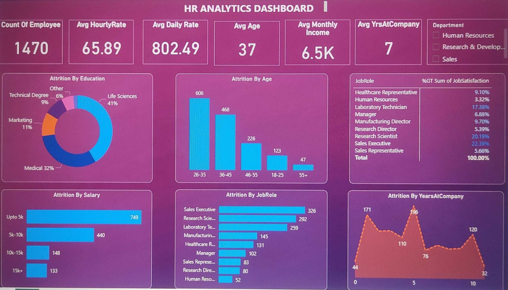
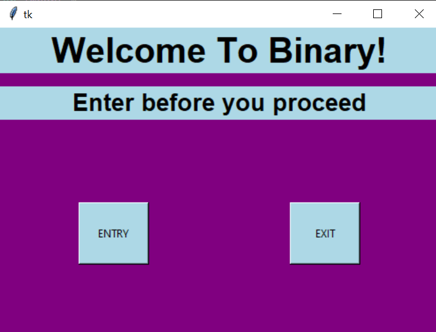

.png)
This is a Data Analyst Project created in excel which analyses different features and gives insights into the performance of the store.
With this project the owner can understand different attributes of his store and try to improve his business.

This is a Data Analyst project which analysis the data of a pizza store.
For this project I have used MS SQL to get insights from the dataset,
after which I used PowerBi for cleaning the dataset and created a visualization dashboard
which gives different insights from the data and represents the data in a visual way.
This is a machine learning project which predicts the price of houses in Bangalore.
I have used different features from the dataset such as area, location, BHK and many other attributes to predict the prices.
I have also developed a website using flask where we can interact with the model to get our output.

This is a Data Analytics project. This project uses a HR_analytics dataset, which contains different information such as Attrition Rate, number of working hours, daily rate, age, average salary and many more key performing indexes which gives the HR good insights about the performance of the company.

This is a face Recognition based Attendence System. This project used face_recognition modules along with haar cascades to detect and identify the images.
Once the images are identified their entry is recorded in the excel sheets. The user can interact with the GUI to update their entry or exit in the excel files.
Hola. I'm Varshit Deshpande. I am a curious and passionate programmer with a deep fascination for the world of data.
My journey into programming was sparked by the realization that data holds the key to unlocking insights, patterns, and solutions that can drive informed decision-making.
I'm currently pursuing my B. Tech final year in Malla Reddy University. I previously completed my virtual internship in AWS-AICTE where I worked with
different AWS cloud services such as S3, Sagemaker, Redshift to perform different data Analysis.
I also have a genuine and strong interest in business that has developed over time through various experiences.
Apart from that I'm a cinephile and I love playing chess. I also find my interests in learning new things and knowing about Geopolitics and History.
I also spend my time learning Spanish and I love to travel.